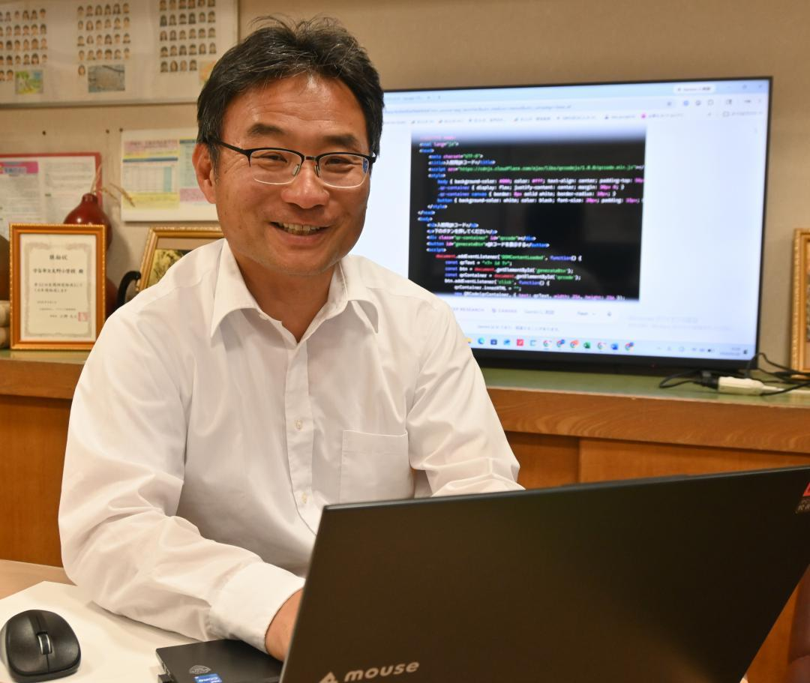

校長がバイブコーダーなのすごいな
【茨城新聞】QRコードで入校管理 嶋田校長、システム開発 守谷・大野小 茨城
https://
ibarakinews.jp/news/newsdetai
l.php?f_jun=1779793718102600
… #茨城新聞

茨城県内学校の入学式などに部外者が紛れ込み無断撮影した問題を受け、同県守谷市立大野小校長の嶋田知成さん(54)が生成AI(人工知能)を駆使し、QRコードを用いた来校者の入校管理システムを開発した。入学式などで大勢が来校した際、手続きの簡略化で混雑を緩和でき、人の目を光らせやすくなるのが利点。市教育委員会が関心を持ち、市内の公立小中全13校での導入を検討している。
ibarakinews.jp